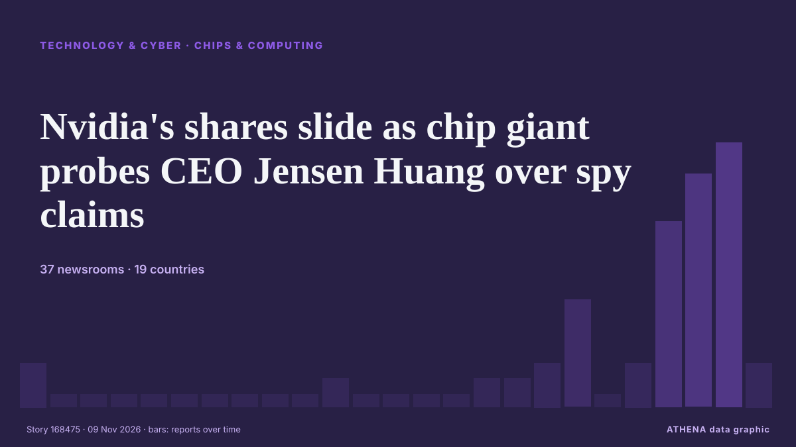

Nvidia's shares slide as chip giant probes CEO Jensen Huang over spy claims

Huang says he had an affair; the company’s board is launching an investigation. από The Business Times
Αναφέρθηκε ανεξάρτητα από 37 μέσα σε 19 χώρες από τις 7 Νοε, πρώτο το Yonhap (English)· η κάλυψη εξαπλώνεται ακόμη. Το ATHENA εκτιμά τον κίνδυνο μέτριο (3.7/10), κυρίως λόγω της σοβαρότητάς του και του ρυθμού κάλυψης. Βεβαιότητα 85% (υψηλή): το επιβεβαιώνουν 37 ανεξάρτητα μέσα, μέση αξιοπιστία 74%. Μέσα ανά χώρα: Ινδία (8), Ηνωμένες Πολιτείες (7), Νότια Κορέα (5). Κάλυψη: 7 Νοε έως 9 Νοε, 46 ώρες.
Γιατί έχει σημασία: Οι εξελίξεις στην τεχνολογία και την κυβερνοασφάλεια διαμορφώνουν την ασφάλεια, τον ανταγωνισμό και τους κανόνες της ψηφιακής ζωής.
Τι άλλαξε: 55 νέες αναφορές από 38 μέσα στο 24ωρο έως 9 Νοε.
Πρώτη διατύπωση: Nvidia CEO's daughter cancels planned visit to S. Korea: sources
Οι τίτλοι των ειδήσεων παρουσιάζονται στα αγγλικά, όπως δημοσιεύτηκαν.
Πώς να διαβάσετε αυτή τη σελίδα
- Τι διαβάζετε
- 37 μέσα σε 19 χώρες ανέφεραν αυτό το γεγονός. Οι αναφορές παρακάτω εμφανίζονται με τη σειρά που δημοσιεύτηκαν· κάθε τίτλος ανοίγει το αρχικό άρθρο. Το ATHENA δεν γράφει δικά του ρεπορτάζ.
- Η εκτίμησή μας
- Για την καταγραφή — Οι αναφορές περιγράφουν ένα ολοκληρωμένο, εσωτερικό, εμπορικό ή προσωπικό ζήτημα. Το καταγράφουμε ώστε να βλέπετε ποιος το ανέφερε και πότε. Δεν παρακολουθούμε εδώ κίνδυνο ευρύτερης σύγκρουσης.
- Πόσα στοιχεία υπάρχουν
- Ισχυρή Πολλά ανεξάρτητα μέσα σε πολλές χώρες περιγράφουν το ίδιο γεγονός.
Αφού αφαιρεθούν οι επαναλήψεις, τα άσχετα και τα παλιά στοιχεία, υπολογίζονται 23 από τις 39 αναφορές που παρατίθενται· το 87% των τίτλων αντιστοιχεί στο γεγονός.
Περίπου το 26% των τίτλων είναι ανάλυση ή άποψη και όχι απλό ρεπορτάζ.
- Τι δεν σημαίνει
- Το ATHENA μετρά πώς καλύπτεται ένα γεγονός, όχι αν είναι αληθές. Δεν είναι πρόβλεψη, κρίση για το ποιος έχει δίκιο ή συμβουλή.
- Τι θα την άλλαζε
- Αναφορές από άλλα ανεξάρτητα μέσα που δείχνουν διαφορετική εξέλιξη, ή σαφής επιβεβαίωση ή διάψευση από επίσημη πηγή.
Εκτίμηση R2 · ανανεώνεται με κάθε ενημέρωση της σελίδας. Το ATHENA δεν έχει δημοσιεύσει ακόμη ιστορικό επιδόσεων για αυτές τις εκτιμήσεις· όταν το κάνει, θα συνδέεται εδώ.
Με μια ματιά
Επιλέγεται, βαθμολογείται και γράφεται από τη δημοσιευμένη μεθοδολογία του ATHENA. Κανένας συντάκτης δεν παρεμβαίνει σε μεμονωμένα γεγονότα. Πώς παράγεται ›
| 07 Nov 13:20 UTC | 2 |
|---|---|
| 07 Nov 15:20 UTC | 0 |
| 07 Nov 17:20 UTC | 0 |
| 07 Nov 19:20 UTC | 0 |
| 07 Nov 21:20 UTC | 0 |
| 07 Nov 23:20 UTC | 0 |
| 08 Nov 01:20 UTC | 0 |
| 08 Nov 03:20 UTC | 0 |
| 08 Nov 05:20 UTC | 0 |
| 08 Nov 07:20 UTC | 0 |
| 08 Nov 09:20 UTC | 1 |
| 08 Nov 11:20 UTC | 0 |
| 08 Nov 13:20 UTC | 0 |
| 08 Nov 15:20 UTC | 0 |
| 08 Nov 17:20 UTC | 0 |
| 08 Nov 19:20 UTC | 1 |
| 08 Nov 21:20 UTC | 1 |
| 08 Nov 23:20 UTC | 2 |
| 09 Nov 01:20 UTC | 6 |
| 09 Nov 03:20 UTC | 0 |
| 09 Nov 05:20 UTC | 2 |
| 09 Nov 07:20 UTC | 11 |
| 09 Nov 09:20 UTC | 14 |
| 09 Nov 11:20 UTC | 16 |
| 09 Nov 13:20 UTC | 2 |
| 09 Nov 11:39 UTC | 1.5 |
|---|---|
| 09 Nov 11:42 UTC | 2.4 |
| 09 Nov 11:50 UTC | 3.8 |
| 09 Nov 13:47 UTC | 3.7 |
Γιατί αυτοί οι αριθμοί
Σημασία
Κίνδυνος
Βεβαιότητα
Η κάλυψη — ποιος το ανέφερε και πότε
ο τίτλος όπως δημοσιεύτηκε · ανοίγει το πρωτότυπο- Yonhap (English) · Νότια ΚορέαNvidia CEO's daughter cancels planned visit to S. Korea: sources
- Korea Herald · Νότια ΚορέαNvidia CEO's daughter cancels planned visit to S. Korea: sources
- Indian Express · ΙνδίαBengaluru minister calls for key mobility upgrade at Tin Factory Junction
- Deccan Herald · ΙνδίαAI is driving a new generation of increasingly complex chips: Tessolve CEO Srini Chinamilli
- investingLive (ForexLive) · INTBitcoin continues to trade heavily, under $74,600, risk mood turns wary
- The Business Times · ΣιγκαπούρηNvidia CEO Jensen Huang’s confession engulfs chip giant in spying controversy
- SpyTalk · Ηνωμένες ΠολιτείεςNew in SpyWeek: Suspected Chinese Spy Snares Nvidia Boss in Far Reaching Scandal
- DigiTimes Asia · ΤαϊβάνNvidia cancels South Korea trip of Jensen Huang's daughter over family reasons
- CNBC World · Ηνωμένες ΠολιτείεςWhat Jensen Huang's affair with an accused Chinese spy means for Nvidia stock
- Yonhap (English) · Νότια ΚορέαKakao Mobility, Nvidia team up to develop Level 4 autonomous driving technology
- Korea Herald · Νότια ΚορέαLngshot to gain momentum from Kakao, AMG partnership
- CNA (Channel NewsAsia) · ΣιγκαπούρηNvidia falls about 3% in after-hours and perpetual futures trade
- France 24 English · ΓαλλίαNvidia to probe reports that Chinese intelligence targeted CEO Jensen Huang
- Korea Herald · Νότια ΚορέαKakao eyes Seoul Arena as new growth engine amid strong early demand
- Times of India · ΙνδίαNvidia CEO Jensen Huang's spy row puts spotlight on scandals that cost CEOs their jobs
- DigiTimes Asia · ΤαϊβάνNvidia's Korea deals proceed despite Jensen probe as Kakao Mobility signs Level 4 autonomous driving pact
- Asharq Al-Awsat (English) · Σαουδική ΑραβίαNvidia Announces Probe into Huang Amid Reports China Spied on Him
- AzerNews · ΑζερμπαϊτζάνNvidia CEO admits affair as company investigates alleged Chinese espionage operation
- BusinessWorld · ΦιλιππίνεςNvidia’s shares slide as chip giant probes CEO over spy claims
- Times of India · Ινδία'Baseless smear campaign': China denies spying charge targeting Nvidia CEO
- Euronews English · ΓαλλίαTrump calls Nvidia chief Jensen Huang an 'honorable guy' amid spy allegations
- Greek Reporter · ΕλλάδαNvidia CEO Faces Espionage Investigation Over Alleged Chinese Intelligence Operation
- Times of India · ΙνδίαNvidia shares fall after CEO Jensen Huang admits affair; what it means for company
- Belfast Telegraph · Ηνωμένο ΒασίλειοChina dismisses Nvidia chief spy plot claim as ‘smear campaign’
- Khaama Press · ΑφγανιστάνWho Is Alice Huang? Chinese Spy Allegations Put Nvidia CEO Jensen Huang Under Scrutiny
- Times of India · ΙνδίαSix-month-old memo that first warned US govt about Nvidia CEO Jensen Huang's affair
- Anadolu Agency (English) · ΤουρκίαBeijing dismisses Nvidia CEO spy plot allegations as ‘nothing but smears against China’
- Livemint · ΙνδίαChina rejects ‘spy plot’ claims around Nvidia CEO Jensen Huang, calls it ‘nothing but smears’ | What Beijing said
- DigiTimes Asia · ΤαϊβάνNvidia's Taiwan partners rally despite Jensen probe
- Asharq Al-Awsat (English) · Σαουδική ΑραβίαNvidia’s Jensen Huang, the Scandal-Hit AI Visionary in a Leather Jacket
- Cointelegraph · Ηνωμένες ΠολιτείεςBTC price eyes $73K amid Nvidia volatility: Three things to know in Bitcoin this week
- CNBC World · Ηνωμένες ΠολιτείεςWhat is Megaspeed? The Nvidia chip buyer in the spotlight after Jensen Huang’s affair
- The National Herald · Ηνωμένες ΠολιτείεςChina Dismisses as a Smear Campaign Claims of a Spy Plot Involving Nvidia CEO Jensen Huang
- Al Jazeera English · ΚατάρWhy is Nvidia’s Jensen Huang at the centre of a US-China spy scandal?
- Euronews English · ΓαλλίαWho is Alice Huang, the alleged Chinese spy linked to Nvidia's Jensen Huang?
- CNBC World · Ηνωμένες ΠολιτείεςNasdaq defies Nvidia impact as Huang faces espionage affair probe
- Fortune · Ηνωμένες ΠολιτείεςNvidia board’s probe into Jensen Huang’s affair with a suspected Chinese spy could look at questionable statements from the CEO and his spokespeople
- DW English · ΓερμανίαWhy Nvidia CEO's affair with alleged Chinese spy matters
- NDTV · ΙνδίαA Chinese Spy, Nvidia's CEO And A Secret Memo That Reached Marco Rubio